Module 02b · Ordering — Pulse Chatkhara frames (67)
comp
new
order
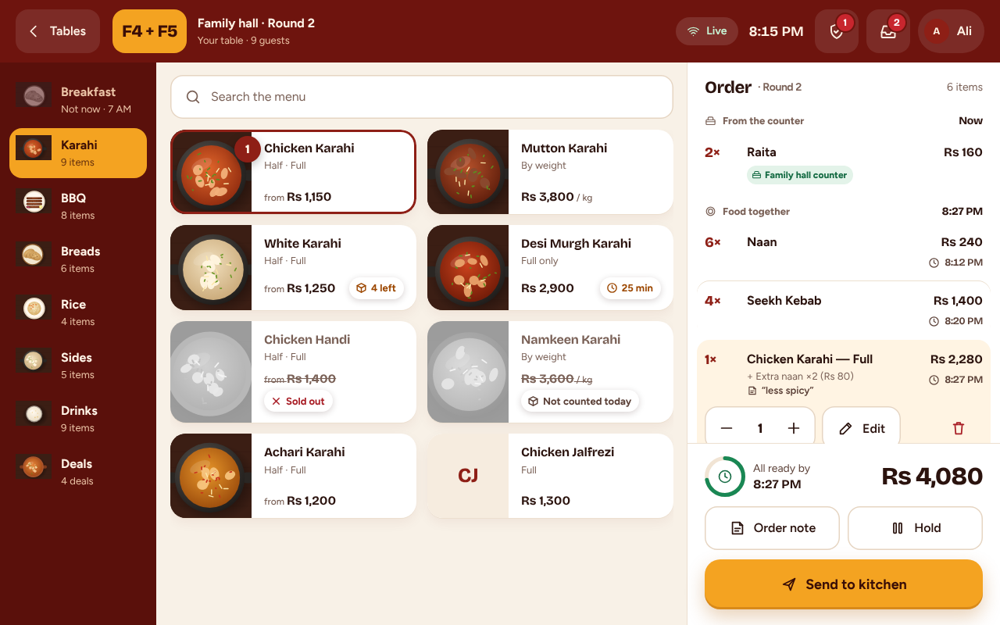
02-S05 · Order screen — live time per line, group promise, counter line, Send (tablet) · 1280x800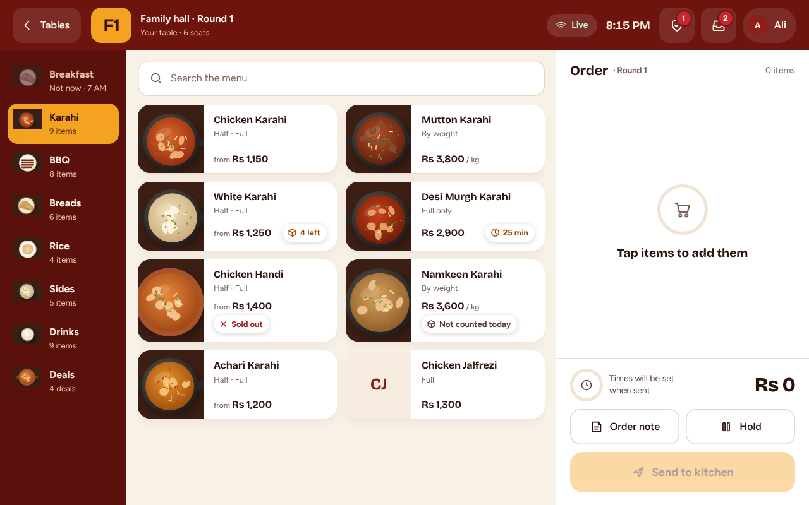
02-S05 · Empty cart — Send off (tablet) · 1280x800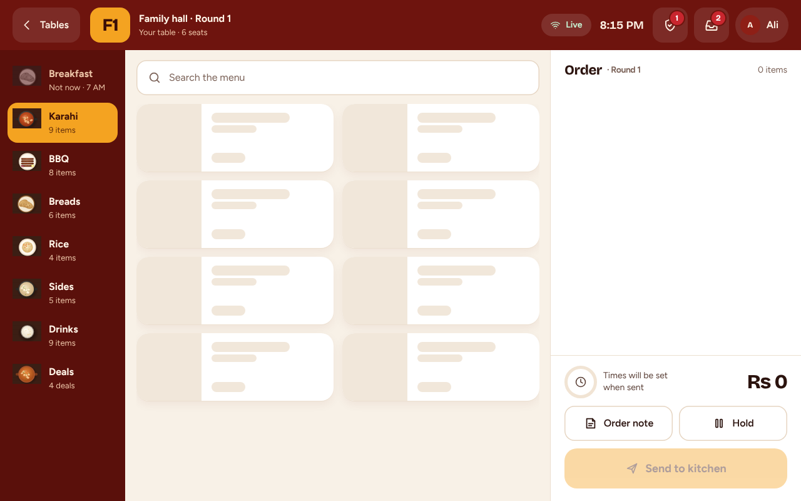
02-S05 · Menu loading — skeleton tiles (tablet) · 1280x800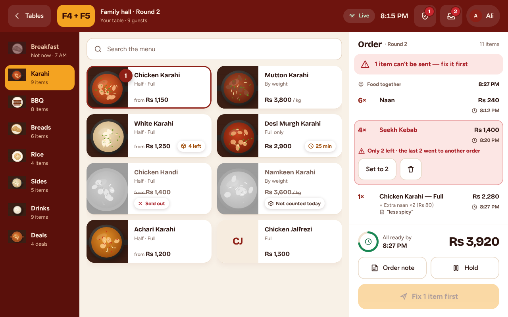
02-B05 · B07 · Line problem — “Only 2 left”: Set to 2 / Remove; Send waits (tablet) · 1280x800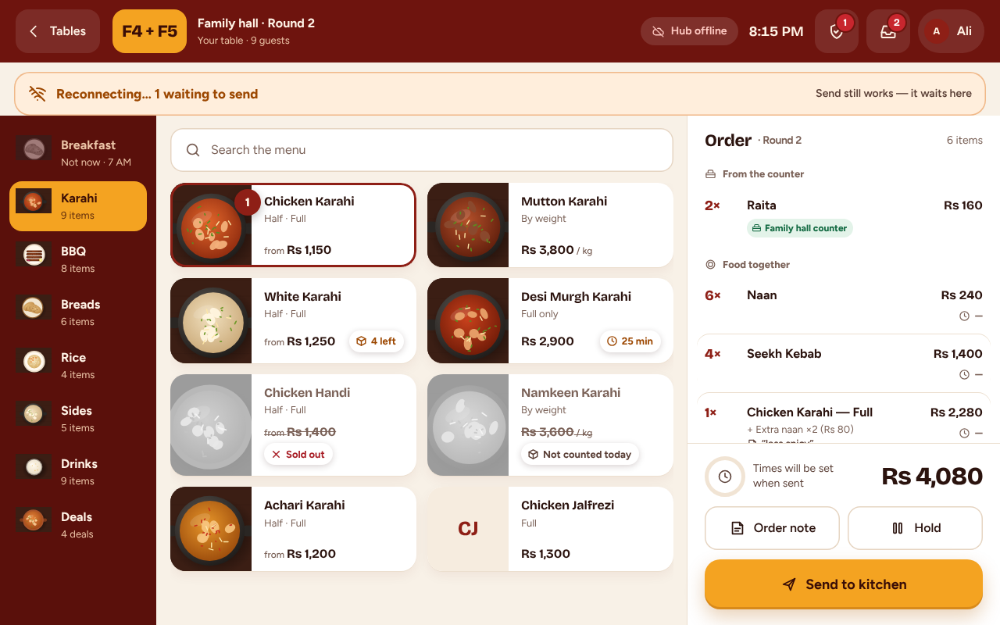
02-B04 · B02 · Hub offline — times “—”, “set when sent”; Send queues (tablet) · 1280x800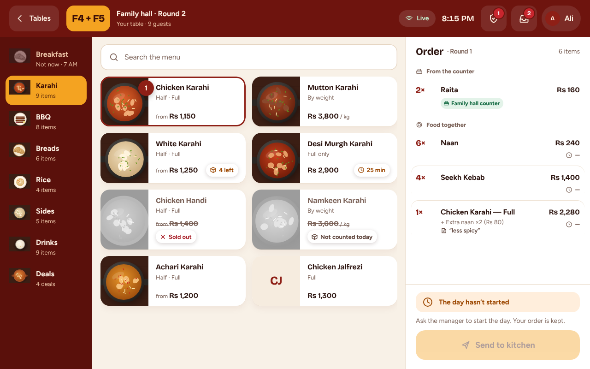
02b-B11 · Day not started — “Ask the manager” (tablet) · 1280x800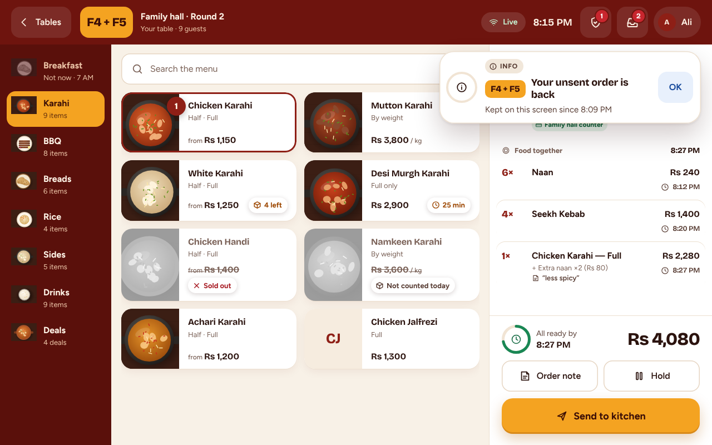
02-B03 · Draft restored after sign-in — info banner (tablet) · 1280x800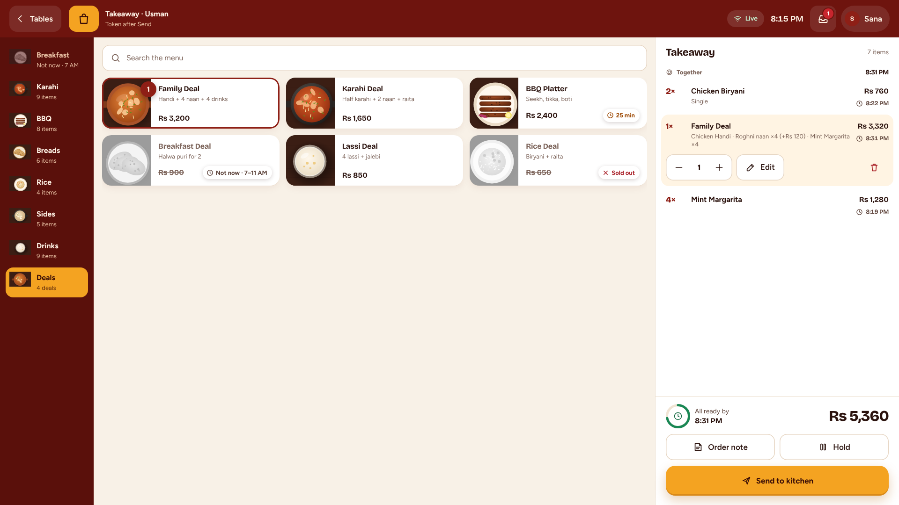
02-S05 · Cashier kiosk — takeaway, deal line open, wider cart (kiosk) · 1920x1080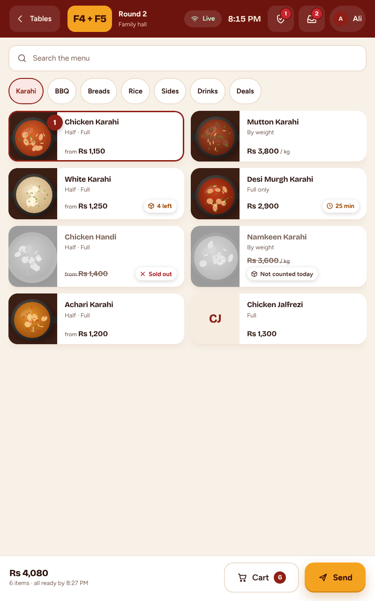
02-S05 · Tablet portrait — menu full width, summary bar; cart opens as a sheet (tablet portrait) · 800x1280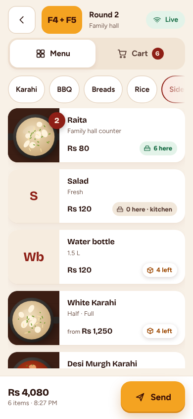
02-S10 · Phone — Menu tab, zone count, sticky Send bar (phone) · 390x844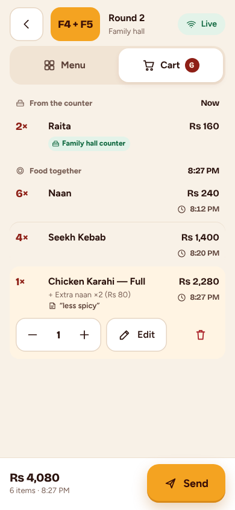
02-S10 · Phone — Cart tab, line open (phone) · 390x844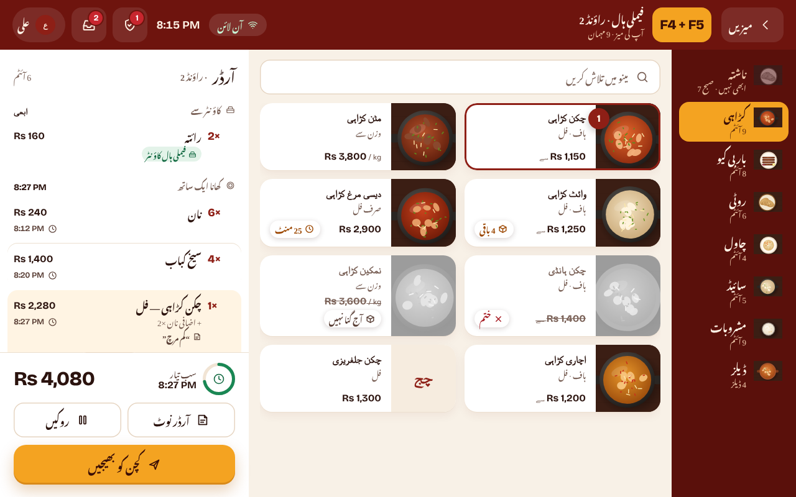
02-S05 · Order screen — Urdu RTL; prices, times, table names LTR (tablet) · 1280x800sheet
send
tv
act
list
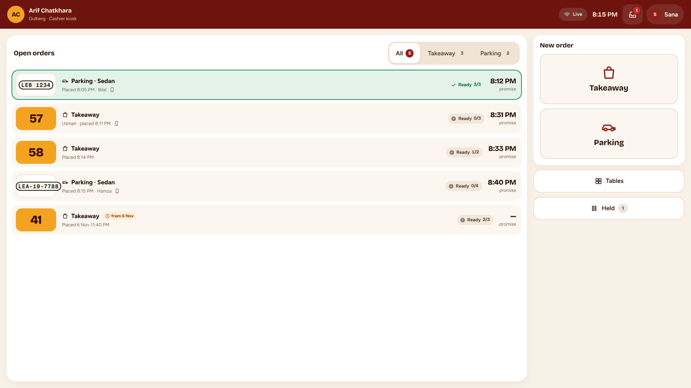
02-S07 · Cashier kiosk home — open orders by promise, Ready highlighted, Takeaway / Parking (kiosk) · 1920x1080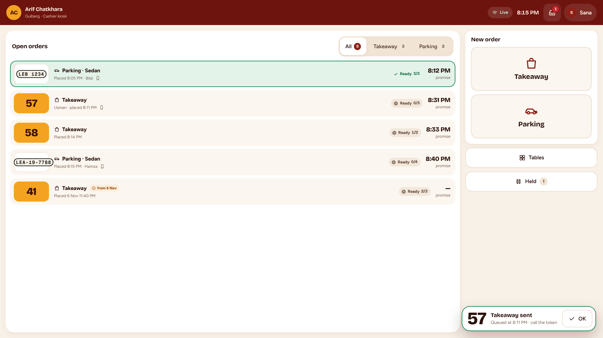
02-D07 · Queued takeaway sent on reconnect — sticky “token 57” card (kiosk) · 1920x108002-S07 · Managers only — Abandoned tab (any type) (tablet) · 1280x80002-S07 · Phone — Orders tab, plates and tokens, Ready first (phone) · 390x84402b-S11 · Takeaway order view — token big, Ready 1/3, Served / Not served only (data gap Q19) (tablet) · 1280x80002-S08 · Held orders — this screen, this person; Resume / Discard (tablet) · 1280x80002b-S12 · Zone stock — counts, Low / Empty with icon + word, Refill + / Count = (tablet) · 1280x80002b-S12 · Refill — stepper, new count preview (tablet) · 1280x80002b-C05 · “A zone item is running low” — generic until names are sent (Q8) (tablet) · 1280x800queue
follow
 02-S06 · Table view — rounds by time, stages in words, line actions on the selected line (tablet) · 1280x800
02-S06 · Table view — rounds by time, stages in words, line actions on the selected line (tablet) · 1280x800